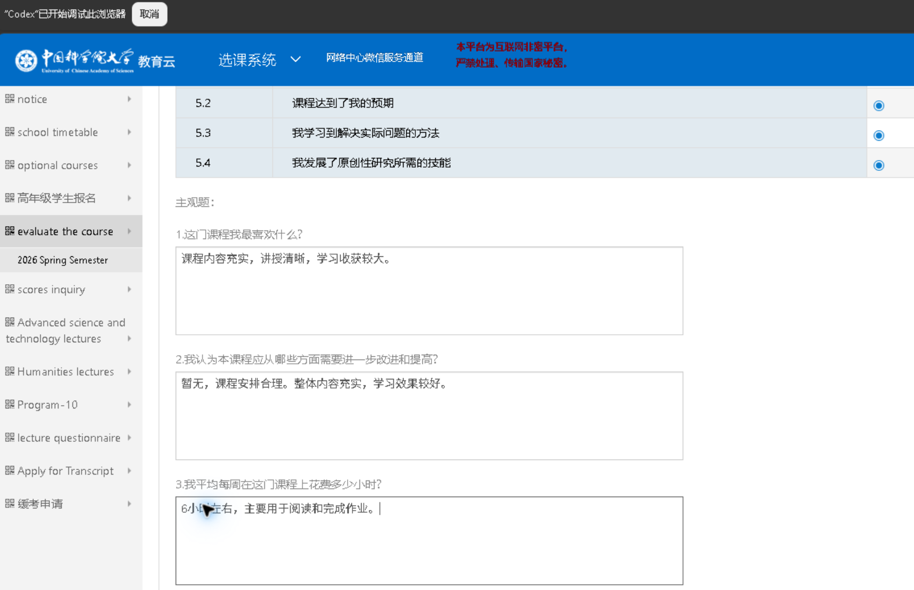

已登录评教页面
课程评价入口、教师评价入口、待评价列表、表单单选项和主观题输入框。
把一次课程评价，从人工逐项填写，变成可验证的自动化流水线。
把已登录的国科大评教页面当作输入，自动识别待评价课程和教师，选择最高客观评价，填写简洁积极的中文主观题，保存并检查完成状态。
课程评价入口、教师评价入口、待评价列表、表单单选项和主观题输入框。
读取页面结构，打开待评价项，设置最高评价，写入中文回答，点击保存。
已完成、已跳过和异常阻塞的项目数量，以及页面状态复核结果。
这里放真实执行素材：录屏展示完整过程，截图展示提交前页面状态。

先在浏览器中登录国科大选课系统，并打开课程评价或教师评价页面，然后在 Codex 中输入：
使用 $ucas-course-evaluation，全自动完成国科大课程评价和教师评价，都给最高评价，主观题用中文。